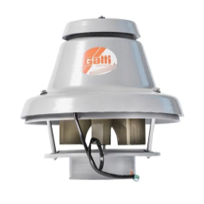

Ventilación
- Axiales
- Centrifugos
- Especiales
- Ventiladores línea doméstica y comercial

Extractores axiales
Amplia variedad de tamaños, potencia y helíces para distintas aplicaciones.
Extractores axiales linea comercial
Linea comercial de elevado rendimiento y baja sonoridad.

Extractores axiales línea doméstica
Extractores pequeños para uso doméstico de baja sonoridad.

Extractores para baños
Diseñados para extración de vapores en baños de gran rendimiento y baja sonoridad.

Extractor para aire de tipo centrífugo
De amplia variedad en cuanto a presión, caudal y aplicaciones.

Extractor para campana linea doméstica
De elevado rendimiento y baja sonoridad.

Extractores para campana tipo industrial
De elevado rendimiento y baja sonoridad.

Extractor axial en polímero
De elevado rendimiento, baja sonoridad y de bajo peso.
Extractor tubular en línea
Diseñados para instalarse en secciones intermedias de tuberias.
Ventilador de ménsula
Modelos para aplicación domestica, comercial e industrial.

Ventilador de pie
Modelos para aplicación domestica, comercial e industrial.